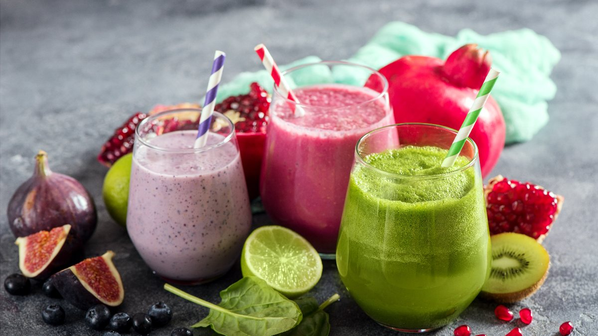
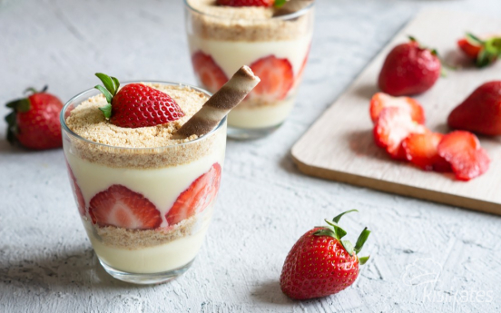

Smoothie Tarifi
Resime tıklayarak malzeme listesine ulaşabilirsiniz...
Smoothie, taze meyve ya da meyve suyundan, süt veya yoğurt ilave edilerek yapılan milkshake tarzı bir içecektir. Milk shake'e ve ice slush'a benzer. Sporcuların özellikle protein tozu ekleyerek kullandığı görülmüştür.
Pasta Tarifi
Resime tıklayarak malzeme listesine ulaşabilirsiniz...

Çikolatalı kek, eritilmiş çikolata veya kakao tozu ile tatlandırılmış bir kek türü. Çikolatalı kek çikolata ile yapılır fakat diğer maddeler ile de yapılabilir. Bu maddeler fudge, vanilyalı krem ve diğer tatlandırıcılardır.
Magnolia Tarifi
Resime tıklayarak malzeme listesine ulaşabilirsiniz...
